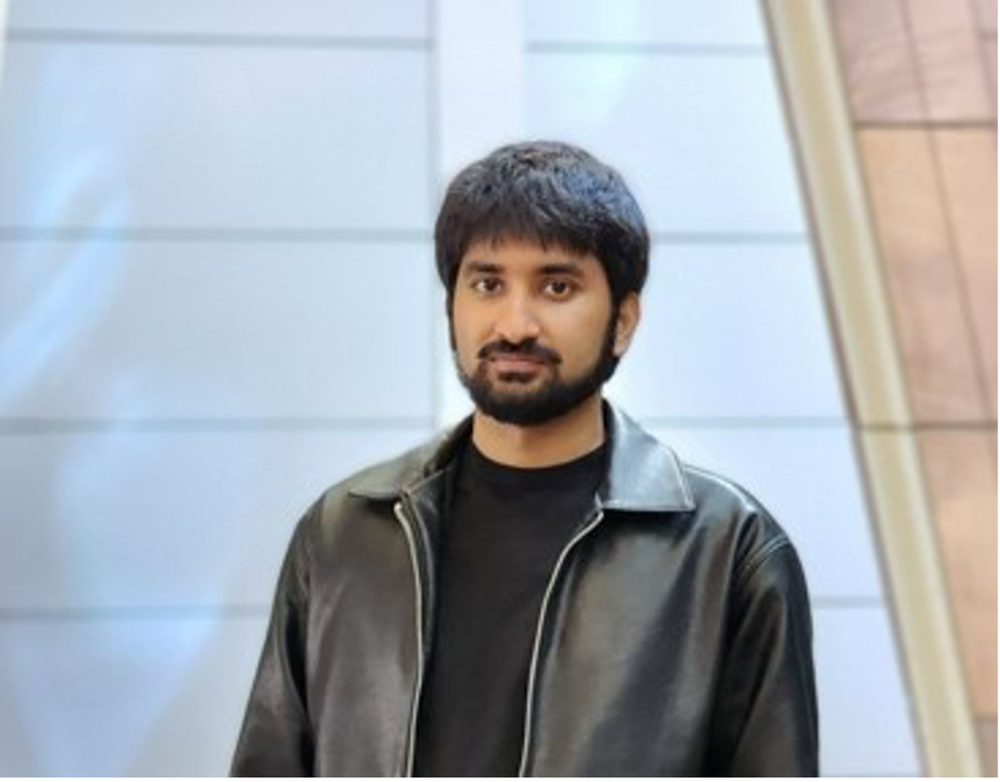
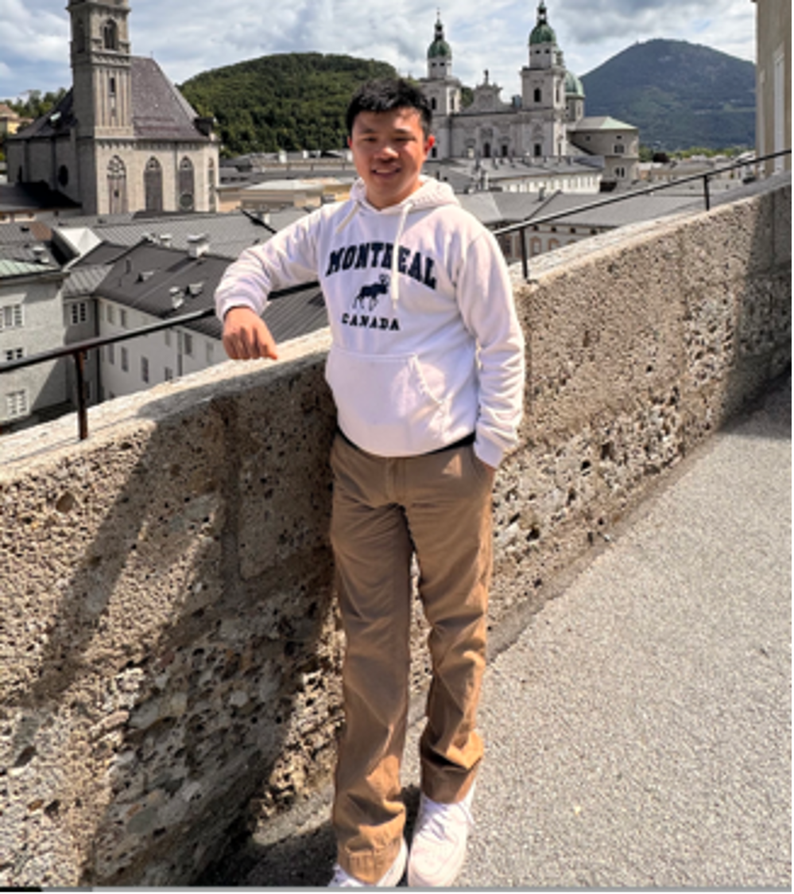
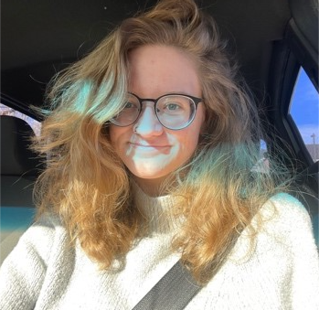
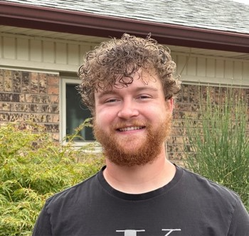
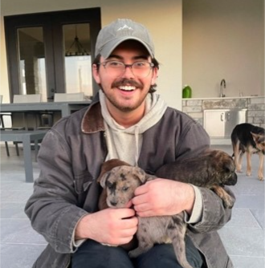

PATH-GDS Scholars
2024 Scholars
Matthew Joel

Matthew is an MS in Statistics at CU Denver. Matthew is a Colorado native who also completed his undergrad in mathematics there. His academic journey has taken many turns, starting in biomedical engineering before merging his love of math and biology through the Path-GDS program. Matthew’s curiosity extends beyond academics—he’s always enjoyed modding video games and picked up computer science as a minor. He’s also an avid motorsports fan, especially into drifting, and loves working on cars. His passion for data science comes from its versatility, and he hopes to use his skills to make an impact in genomic data science, ultimately aiming to make a difference in others’ lives.
David Sadovskyy
Davyd attended Miami University in Ohio and double majored in biology and data science/statistics. He hasn’t had much research experience but is excited to gain that from PATH-GDS. Davyd is most interested in studying the ways human health and performance can be optimized with drugs or other data driven interventions. In his free time, he enjoys lifting and competitive arm wrestling.
Johannes Strauss

Johannes is a second-year Master’s student in statistics. Originally from northeastern China, he moved to the United States at the age of ten. He completed his undergraduate studies in mathematics at the University of Colorado Denver. Johannes joined PATH-GDS because of his passion for interdisciplinary work, focusing on the application of mathematical methods to solve real-world problems. His interest lies within Uncertainty Quantification, especially Bayesian approaches in UQ problems. Outside of academics, Johannes enjoys outdoor activities, attending and supporting the opera and symphony, and savoring good German beer and enjoys making authentic Chinese food.
Keshav Vembar
Keshav is an MS students in Applied Mathematics at CU Denver. He earned a Bachelor’s degree in Computer Science with a minor in math from Colorado School of Mines. His passion is in mathematics, and he wants to make a positive difference in the world through research. Keshav sees PATH-GDS as a way to learn how to apply his math skills to real-world applications in genomics. Outside of academics, Keshav loves music, playing guitar, and hiking through Colorado.
2023 Scholars
Emily Aaron

Emily is an MS student in Statistics at CU Denver. Emily is from Colorado and did her undergraduate studies at MSU Denver in Mathematics and Biology. She is joining the program because she wants to be a biostatistician after earning her masters. As someone with a genetic illness, she hopes to use genomic data science to understand the complexity of DNA and its mishaps more.
Tristan Orndorff

Tristan is an MS student in Statistics. He is from Albuquerque New Mexico and did his undergrad at The University of New Mexico in statistics.
He joined PATH-GDS because the idea of applying what he is learning and getting a better idea of what he will do in his career is exciting.
Shane Ridoux

Shane is an MS student in Statistics at CU Denver. Shane is from New Jersey and did his undergraduate studies at Trinity University in San Antonio. He joined PATH GDS to combine his passion for Mathematics with his goal of helping those with neurodegenerative diseases such as ALS.
Alumni Scholars
Souha Tifour
Souha graduated from CU Denver with a Statistics MS in Spring 2024. She completed her undergraduate studies in Mathematics at the University of Colorado Denver. Souha’s passion lies in the development and application of statistical models, particularly within the realm of genetics. By engaging in this field, she aspires to contribute to the advancement of scientific understanding of diseases and uncover potentially effective strategies for enhancing health.